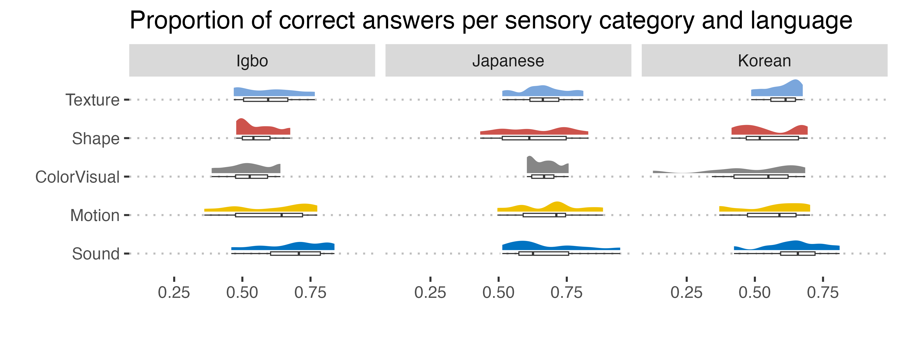
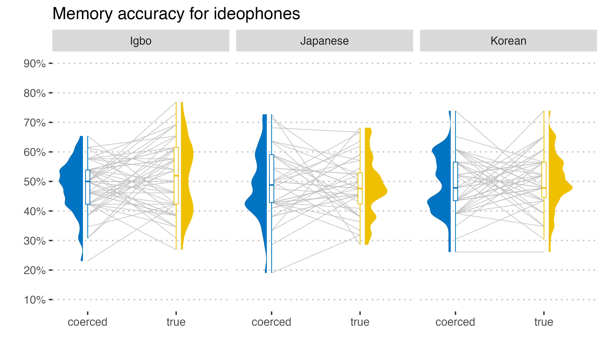
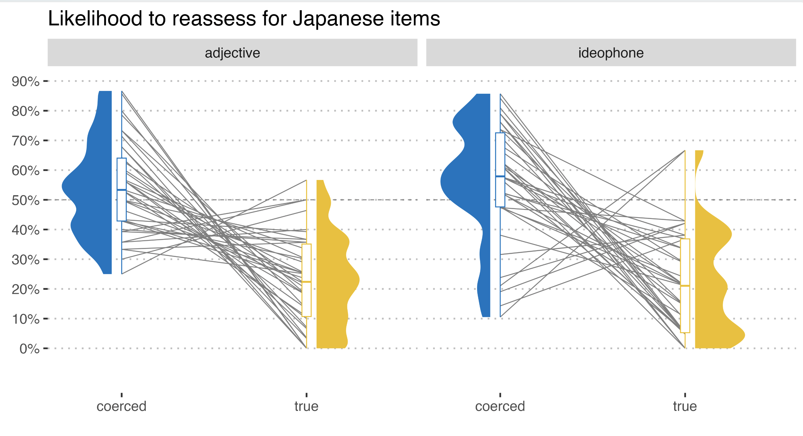

Hooray, our paper came out, openly accessible in Cognitive Science! Its title is “Iconicity in ideophones: Guessing, memorizing, and reassessing” and you can find it here.
Grateful to have been able to work with my co-authors: Arthur Lewis Thompson, Youngah Do and Mark Dingemanse.
Abstract
(skip this if it’s too technical)
Iconicity, or the resemblance between form and meaning, is often ascribed to a special status and contrasted with default assumptions of arbitrariness in spoken language. But does iconicity in spoken language have a special status when it comes to learnability? A simple way to gauge learnability is to see how well something is retrieved from memory. We can further contrast this with guessability, to see (1) whether the ease of guessing the meanings of ideophones outperforms the rate at which they are remembered; and (2) how willing participants’ are to reassess what they were taught in a prior task—a novel contribution of this study. We replicate prior guessing and memory tasks using ideophones and adjectives from Japanese, Korean, and Igbo. Our results show that although native Cantonese speakers guessed ideophone meanings above chance level, they memorized both ideophones and adjectives with comparable accuracy. However, response time data show that participants took significantly longer to respond correctly to adjective–meaning pairs—indicating a discrepancy in a cognitive effort that favored the recognition of ideophones. In a follow-up reassessment task, participants who were taught foil translations were more likely to choose the true translations for ideophones rather than adjectives. By comparing the findings from our guessing and memory tasks, we conclude that iconicity is more accessible if a task requires participants to actively seek out sound-meaning associations.
Background
As regular readers of this blog will know, ideophones are iconic words. That means that their meanings are somehow apparent in the sounds of those words. Or, there is a perceived resemblance between form and meaning.
We have known for a while now that people all over the world are sensitive so certain form-meaning mappings, especially in laboratory phonology studies, which use stimuli like kiki and bouba (go ask your grandma which one she thinks is ‘round and curvy’ and which one is ‘sharp and spiky’ — I bet she’ll make the correct choice [but also don’t come at me for your earnings]).
We have also known that infants and children pick up these words really early. Think of the time you had to learn the sounds of all animals. That’s easy and evocative because those onomatopoeic sounds have a strong resemblance in form and meaning.
Researchers have proposed that it’s exactly that form-meaning mapping that makes it easier to remember those onomatopoeic sounds. And so they’re easier to learn, because you need to less of an effort to make arbitrary connections, like you have to do for most words, e.g., the word wall doesn’t indicate anything about its meaning of WALL.
And if those words are easier to learn, they should also be easier to memorize right?
Guessing
But actually, learning is such a big and vague task, that it’s useful to separate how “guessable” these words are by virtue of their form. For instance, you can probably guess that miāo is a sound made by a cat (in Chinese), but can you guess what the word nuru-nuru in Japanese means? If I tell you that it means ‘slippery’ you might make an easy connection there between those /n/ and /r/ sounds, but one that may not be obvious just by looking at it. So that means that miāo is more guessable than nuru-nuru.
Okay, quick side note, another recent paper by McLean et al. (2023) talks about these issues as well, so go check that out when you’re done here.
There are quite a few studies that look the guessability of words, often using English speakers. In our study, we wanted to see if Cantonese speakers were good at guessing the meaning of ideophones. And we used ideophones from three languages (Igbo, Japanese, Korean).
This experiment, which replicated the methods of a study by Dingemanse et al. 2016 found that our Cantonese participants are very good at guessing the correct meaning when presented with two choice alternatives. As expected, especially for ideophones depicting sound meanings.

Memorizing
Okay, so we were interested in learning. After making sure that our participants were sensititive to these words, we were wondering how good they would be at remembering them.
So we conducted another experiment, inspired by Lockwood et al. (2016).
We made it quite tricky. Half of the form-meaning mappings that participants learned were correct (nuru-nuru meaning ‘slippery’) and half of them were wrong (nuru-nuru means ‘flashing light’). After being exposed to those words we asked them whether they had learned a particular mapping.
It’s kind of like the game of Memory: you get presented with a form and a meaning and you need to tell whether they fit together or not, based on what you learned. It turns out that, on average, it’s hit or miss. There is no particular memory benefit in the ideophones we tested with Cantonese speakers that leads to a good memorisation.

Also, importantly, we also conducted this experimental protocol with adjectives and the results were very similar. It’s all in the paper, but I’m just highlighting the ideophone part here.
Reassessing
Remember how participants sometimes had to learn the correct meaning for an ideophone and other times a wrong, coerced meaning? That comes back now.
After the memorization task, we basically told them: hey, we have taught you the wrong meaning for half of the words you had to learn. Now it’s your turn to think again about these words. And then we exposed them to another guessing task. But because it’s after teaching and after memorizing, it’s in fact a reassessment task.
The participants were pretty good at this task (details in paper).
What I’ll show here is whether participants decided to stick with the meaning they had learned or choose the alternative we presented to them. After all, if ideophones have iconic aspects to tap into, people should be reluctant to choose the alternative when given the choice to change what they had learned, and vice versa, should be eager to change when presented with the real meaning, abandoning the wrong meaning because it was not motivated in a form-meaning mapping.
I quickly mentioned that we also looked at adjectives. For those words, we didn’t have any special predictions, but it turns out they be have somewhat similar to ideophones, although the effect is much less strong when we ran models.
So here you can see (on the right side) how the yellow mean is low at the 20% mark. This means that for those items, which were taught in the right condition, participants stuck to the original meaning they had learned. For coerced meanings (right side, blue), we get a mean of 57% or so, indicating very easy choices for the alternatives.
Looking at adjectives the true form-meaning mapping was also low, but the coerced one much closer to the halfway mark.

For the other languages we found similar results (in the paper), though maybe less pronounced. The models we ran indicate that there are significant effects of language (Japanese > Korean > Igbo) and of course of type (ideophone > adjective), as well as some important interactions with the condition boosting or curbing the effects.
But you’ll have to read the whole paper for that!
Main take away
Ideophones are, once again, proven to be quite guessable. However, the guessability aspects do not necessarily correlate with memory benefits (veridical recall). This may be because not all tasks invite people to think of form-meaning mappings as driven by iconicity. In fact, once given the chance to rethink and reassess the meanings of certain words, participants may tap into iconicity and choose the correct meaning after all, even if they didn’t remember whether they had learned a particular form-meaning pair.
Not all tasks investigating iconicity are equally good at drawing out iconicity. And the learning benefit of iconic words should at least be split up into guessability and memorization, if not more.
Where can I find that paper
Van Hoey, Thomas, Arthur L. Thompson, Youngah Do & Mark Dingemanse. 2023. Iconicity in Ideophones: Guessing, memorizing, and reassessing. Cognitive Science 47(4). e13268. https://doi.org/10.1111/cogs.13268.
You can find the paper version by clicking this link.
There is an online repository with all data, code and figures, which can be found here.
It also hosts the presentation we gave at the Deutsche Gesellschaft für Sprachwissenschaft (DGfS 2023), which I twote about here:
Happy to have presented at #DGfS2023
— Thomas Van Hoey 司馬智 | ABB - collocate-ideophone (@Simazhi) March 8, 2023
"Iconicity in ideophones: Guessing, memorizing, and reassessing"
Work with Arthur Thompson, Youngah Do and Mark Dingemanse
Missed it? Don't worry - soon in Cognitive Science #cogsci @cogsci_soc pic.twitter.com/uvZxp7xOVN
Have reading and have fun with ideophones!